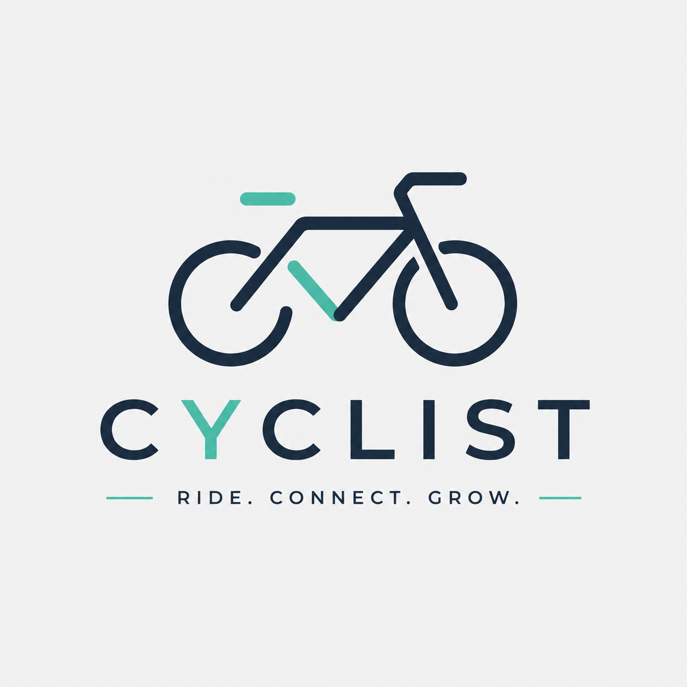

Analista de Dados em transição da Logística, unindo visão operacional e inteligência de negócios.
Ver Meus ProjetosSoluções analíticas focadas em resolver problemas reais de negócio.

Objetivo: Identificar padrões de comportamento de viagens para direcionar a estratégia de conversão de usuários casuais em membros anuais.
Principais entregas: Tratamento de dados em Python, modelagem e dashboard dinâmico para análise de duração de viagens e sazonalidade.
Novas análises focadas em otimização de rotas, logística e automação de processos com Python e SQL estão em desenvolvimento.
Profissional com sólida experiência em Logística, Planejamento de Materiais e Gestão de Estoques, com uma visão analítica voltada para a melhoria contínua e tomada de decisão baseada em dados.
Atualmente graduando em Análise e Sistemas de Desenvolvimento, aprofundo conhecimentos em Python, SQL, Power BI e automação de processos para unir a vivência operacional a soluções eficientes de dados.
Estou aberto a oportunidades na área de Análise de Dados, Business Intelligence e Logística Analítica.